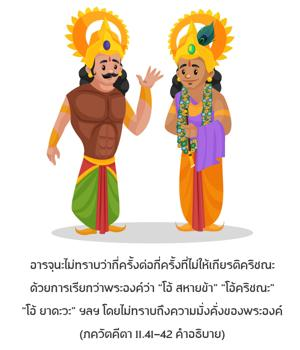

ด้วยความคิดว่าพระองค์ทรงเป็นพระสหาย ข้าเรียกพระองค์อย่างไม่ใคร่ครวญว่า “โอ้ กฺฤษฺณ” “โอ้ ยาทว” “โอ้ เพื่อนข้า” โดยไม่ทราบถึงพระบารมีของพระองค์ ได้โปรดให้อภัยโทษแก่ข้าที่กระทำต่อพระองค์ด้วยความบ้าคลั่งหรือด้วยความรัก ข้าพเจ้าไม่ให้เกียรติต่อพระองค์หลายครั้ง ได้ล้อเล่นกับพระองค์ขณะที่เราพักผ่อนหย่อนใจ นอนบนเตียงเดียวกัน นั่งหรือรับประทานอาหารด้วยกัน บางครั้งอยู่ด้วยกันสองคนและบางครั้งอยู่ต่อหน้าเพื่อนๆหลายคน โอ้ ผู้ไม่มีความผิดพลาดได้โปรดกรุณายกโทษแก่ข้าพเจ้ากับความผิดพลาดทั้งหลาย

ถึงแม้ว่าองค์กฺฤษฺณทรงปรากฏต่อหน้า อรฺชุน ในรูปลักษณ์จักรวาล อรฺชุน ทรงระลึกถึงความสัมพันธ์ฉันเพื่อนที่มีต่อองค์กฺฤษฺณ ดังนั้นจึงขออภัยโทษและทรงขอร้ององค์กฺฤษฺณเพื่อยกโทษให้ในการที่ปฏิบัติตัวเป็นกันเองหลายครั้ง ด้วยความสนิทสนม อรฺชุน ทรงยอมรับว่าในอดีตไม่รู้ว่าองค์กฺฤษฺณทรงสามารถแสดงรูปลักษณ์จักรวาลนี้ ถึงแม้ว่าองค์กฺฤษฺณทรงอธิบายในฐานะที่เป็นเพื่อนสนิท อรฺชุน ไม่ทราบว่ากี่ครั้งต่อกี่ครั้งที่ไม่ให้เกียรติองค์กฺฤษฺณด้วยการเรียกพระองค์ว่า “โอ้ สหายข้า” “โอ้ กฺฤษฺณ” “โอ้ ยาทว” ฯลฯ โดยไม่ทราบถึงความมั่งคั่งของพระองค์แต่องค์กฺฤษฺณทรงมีพระเมตตากรุณามาก ถึงแม้ว่าจะมีความมั่งคั่งเช่นนี้พระองค์ก็ยังคงล้อเล่นกับ อรฺชุน เสมือนเพื่อน นี่คือการสนองตอบในความรักทิพย์ระหว่างสาวกและองค์ภควานฺ ความสัมพันธ์ระหว่างสิ่งมีชีวิตกับองค์กฺฤษฺณนั้นมีความมั่นคงนิรันดรโดยไม่มีวันที่จะลืมเลือนไปได้ ดังที่เราได้เห็นจากพฤติกรรมของ อรฺชุน ถึงแม้ว่า อรฺชุน ทรงเห็นความมั่งคั่งในรูปลักษณ์จักรวาลก็ยังไม่สามารถลืมความสัมพันธ์ฉันเพื่อนที่มีต่อองค์กฺฤษฺณได้